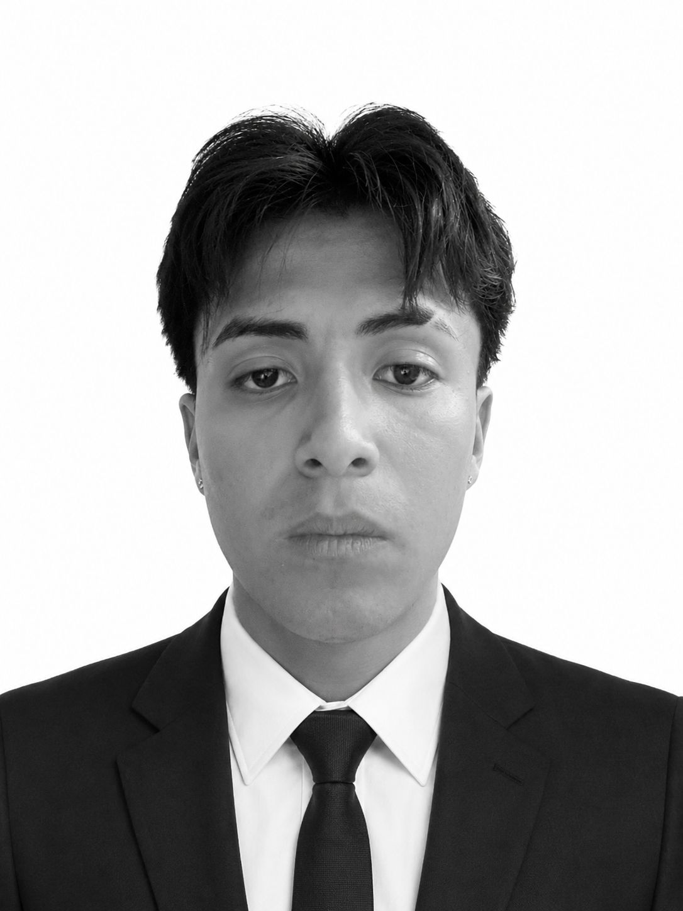
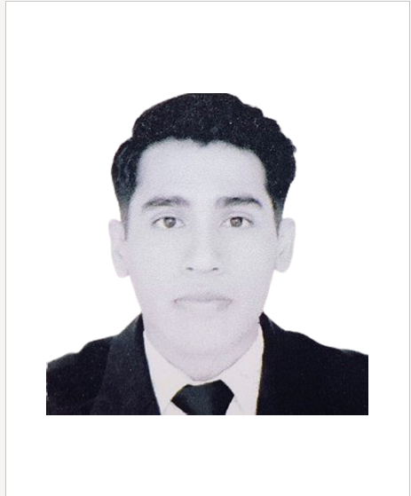
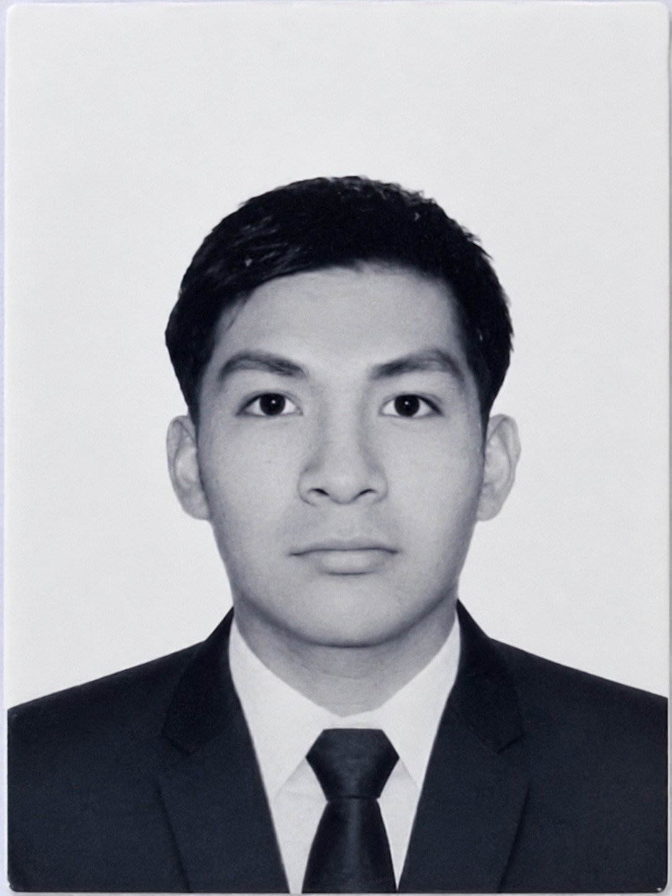
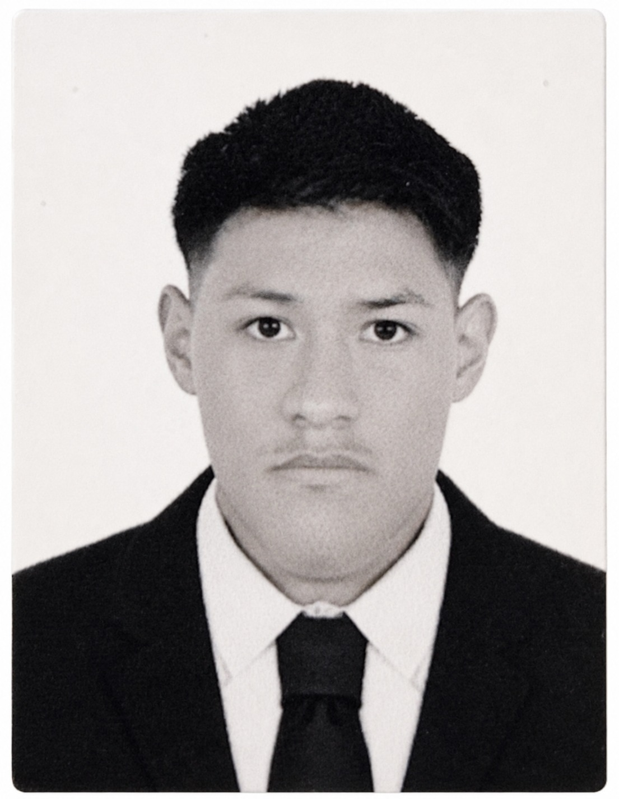
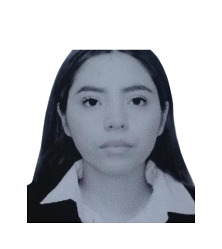
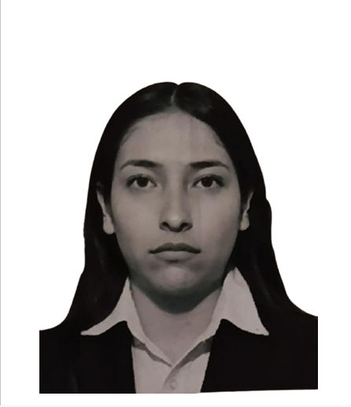

Equipo de desarrollo de la Universidad Tecnológica de Nezahualcóyotl especializado en software, diseño de interfaces, bases de datos y soluciones digitales.

Brian Yahir Escalante González
Ángel Martín Santiago Segura
Daniel Hernández Cruz
Millán Pérez Cristofer Antonio
Mora Pluma Naydelin Guadalupe
Nuci Vázquez Andrea